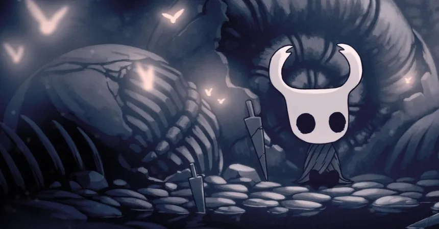

Hollow Knight é um jogo de aventura e exploração desenvolvido pela Team Cherry. Nele, o jogador controla um pequeno cavaleiro que explora Hallownest, um antigo reino subterrâneo cheio de mistérios, criaturas e desafios. Durante a jornada, é possível descobrir novas áreas, enfrentar chefes e encontrar diferentes habilidades e amuletos que ajudam na exploração.
Com seu estilo artístico desenhado à mão, atmosfera sombria e uma trilha sonora marcante, Hollow Knight conquistou muitos jogadores. O jogo combina exploração, combate e descoberta, permitindo que cada jogador conheça os segredos de Hallownest no seu próprio ritmo.

A história de Hollow Knight acontece em Hallownest, um antigo reino subterrâneo que já foi grandioso e próspero. O reino era governado pelo Rei Pálido, uma poderosa entidade que concedeu consciência e inteligência aos seus habitantes. Porém, Hallownest acabou sendo ameaçado por uma misteriosa infecção de origem sobrenatural.
Essa infecção, conhecida como a Radiância, começou a dominar a mente dos habitantes do reino, fazendo com que muitos deles se tornassem agressivos e perdessem sua consciência. Para tentar impedir a infecção, o Rei Pálido criou os Vasos, seres nascidos do Vazio que deveriam ser incapazes de sentir emoções ou serem influenciados pela Radiância.
Entre esses Vasos estava o Cavaleiro, protagonista do jogo. Depois de muito tempo, ele retorna às ruínas de Hallownest e começa a explorar o reino, descobrindo aos poucos seus segredos, seus antigos habitantes e a verdadeira origem da infecção.
Durante sua jornada, o Cavaleiro enfrenta diversos inimigos e chefes e encontra personagens que ajudam a revelar o passado de Hallownest. Aos poucos, ele descobre que sua própria existência está ligada à tentativa do Rei Pálido de salvar o reino.
A história de Hollow Knight é contada principalmente através da exploração, dos diálogos e dos detalhes espalhados pelo cenário. Por isso, muitos acontecimentos não são explicados diretamente, fazendo com que o jogador precise juntar as peças para compreender o passado de Hallownest.